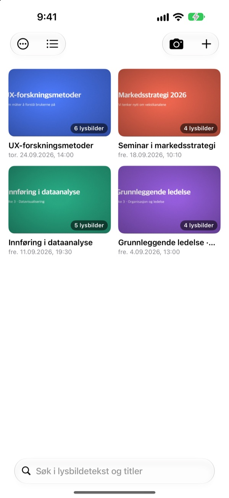
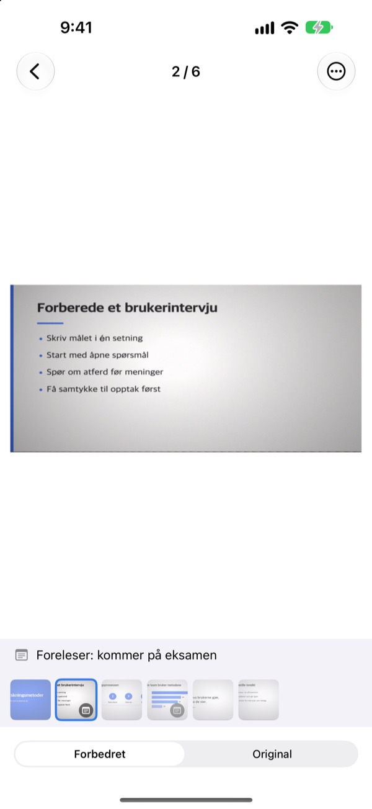
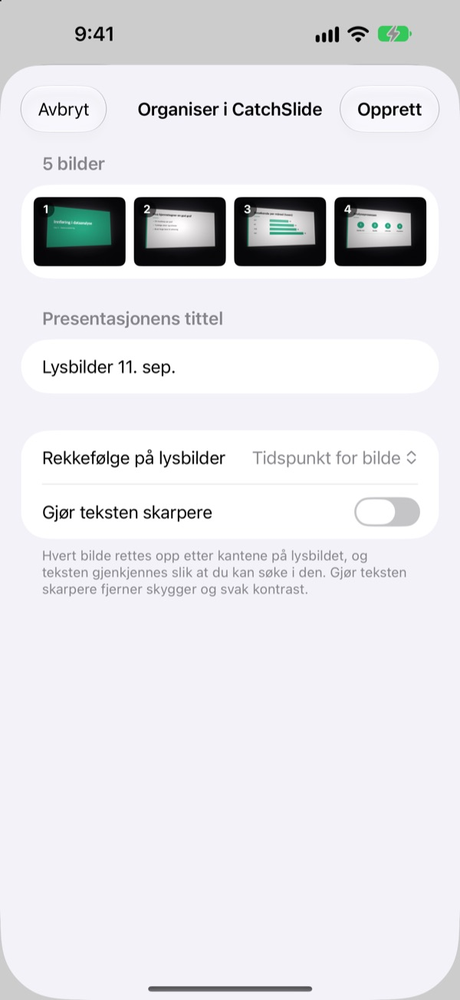
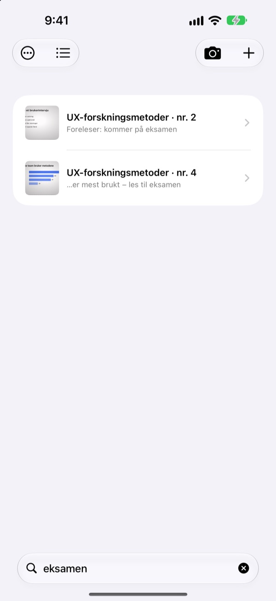

Tatt fra siden.
Lagret forfra.
Kameraet finner alle fire hjørnene på lysbildet, retter det opp og skjærer bort rommet rundt. Lysbilder du tar etter hverandre, havner i samme presentasjon.
Ett kjøp, alle funksjoner. Ingen abonnement, ingen konto.

Rett det opp selv
Bildet er tatt skrått fra en sideplass i auditoriet. Den grønne kanten viser hvor hjørnene på lysbildet ble funnet.
Har du åpnet kamerarullen for å lese og ikke funnet lysbildet?
Lysbilder tatt fra bakerste rad blir alltid skjeve og drukner mellom selfier og kvitteringer. I et stille auditorium er lukkerlyden alene nok til at du nøler. CatchSlide tar bilder uten lyd, retter opp hvert lysbilde og holder dem samlet per presentasjon.
Rett i samme øyeblikk
Kameraet følger de fire hjørnene på lysbildet direkte og blir grønt når det har dem. Selv tatt skrått blir lysbildet rettet opp som om det var tatt forfra, og bakgrunnen skjæres bort.
Ingen lukkerlyd. Slå på Automatisk opptak, så tar appen hvert nytt lysbilde av seg selv og hopper over uskarpe bilder.

Bilder du allerede har, på én gang
Velg flere bilder fra forelesningen i Bilder, og del dem med CatchSlide. De rettes opp og lagres som én presentasjon i den rekkefølgen du tok dem.Gjør teksten skarpere fjerner skygger og matt kontrast.

Ett ord er nok
CatchSlide leser teksten på hvert lysbilde rett på enheten din. Selv uker senere tar ett ord deg tilbake til riktig lysbilde.
Notater på lysbildene er også søkbare. Skriv eksamen på noen av dem, så er hele pensum ett søk unna.

Kom i gang på tre steg
- 1
Åpne kameraet
Fra kameraknappen i listen, widgeten på Hjem-skjermen eller låseskjermen.
- 2
Få lysbildet i bildet
Når hjørnene blir grønne, tar du bildet, eller du lar automatisk opptak gjøre det.
- 3
Les per presentasjon
Søk, legg til notater og eksporter en PDF å lese på.
Dette kan du gjøre med en presentasjon
- Opptak
- Ta opp lyd mens du tar bilder, og spill av hvert lysbilde fra øyeblikket du tok det
- Transkripsjon
- Gjør opptaket om til tekst, viser hva som ble sagt til hvert lysbilde og er med i søket
- AI-oppsummering
- Oppsummerer presentasjonen ut fra lysbildetekst og transkripsjon (iOS 26 eller nyere på enheter med Apple Intelligence)
- Lesestoff med ett, to eller fire lysbilder per side
- Markdown
- En .zip klar for Notion eller Obsidian
- PowerPoint
- Eksporter en .pptx med transkripsjonen i foredragsnotatene
- Slå sammen
- Velg flere presentasjoner og gjør dem til én
- iCloud-synkronisering
- Slå på for å se presentasjonene på andre enheter med samme Apple ID. Av som standard
- Widgeter
- Åpner kameraet rett fra Hjem-skjermen eller låseskjermen
Tekstgjenkjenning, transkripsjon og AI-oppsummeringer skjer på enheten din.
Kjøp én gang, få alt
CatchSlide
- Lydløse bilder, automatisk opptak og oppretting
- Import av flere bilder samtidig fra Bilder
- Lysbilder per presentasjon, søk i tekst og notater
- Opptak, transkripsjon og AI-oppsummering
- Eksport til PDF, Markdown og PowerPoint
- iCloud-synkronisering og widgeter
Tips (valgfritt)
- Hvis appen hjelper deg, kan du gi utvikleren litt tips
- Tips låser ikke opp noe. Alle funksjoner virker uten
Du finner det under Min info.
Ingen abonnement og ingen betaling for ekstra funksjoner. Se prisen i ditt land i App Store.
Vanlige spørsmål
Hvordan tar jeg bilde av et lysbilde?
Åpne kameraet og rett det mot lysbildet. Når hjørnene blir grønne, trykker du på utløseren. Med automatisk opptak på tar appen neste lysbilde selv hver gang det skifter.
Lager den lukkerlyd?
Nei. Bildet lagres rett fra kameraet, så det er lydløst i alle land.
Hvorfor er bildene mine samlet i én presentasjon?
Tar du neste bilde innen 5 minutter etter det forrige, hører det til samme presentasjon. Trykk på tittelen i listen for å gi den nytt navn, og bruk Slå sammen presentasjoner for å samle dem som er delt opp.
Kan jeg legge til bilder jeg allerede har tatt?
Ja. Velg dem i Bilder og del dem med CatchSlide, eller trykk på ＋ i listen og velg Importer fra Bilder. De rettes opp og lagres som én presentasjon i den rekkefølgen de ble tatt.
Hjørnene ble funnet feil.
Åpne lysbildet, velg Juster hjørner i ⋯-menyen og dra de fire hjørnene på plass. Gjenkjenn automatisk leter etter dem på nytt, og Hele bildet bruker hele fotoet. Originalen tas alltid vare på, så du kan gjøre det om når som helst.
Kan jeg søke i teksten på lysbildene?
Skriv et ord i søkefeltet øverst i listen. Søket går gjennom lysbildetekst, titler, notater og transkripsjoner og hopper rett til lysbildet. Tekstgjenkjenningen skjer på enheten.
Hvordan eksporterer jeg en PDF?
Åpne delingsmenyen i en presentasjon, velg Eksporter som PDF og velg ett, to eller fire lysbilder per side. Fra delingsarket kan du lagre den i Filer eller sende den til en annen app.
Hvordan endrer jeg rekkefølgen eller sletter lysbilder?
Hold fingeren på et lysbilde i en presentasjon og dra det. I samme meny kan du slette eller dele et lysbilde, og med Velg sletter du flere samtidig.
Hvordan fungerer opptak og AI-oppsummering?
Slå på Ta opp øverst i kameraet, så tar hvert lysbilde vare på lyden fra det øyeblikket. Under Presentasjonsnotater lager Oppsummer med AI en oppsummering ut fra lysbildetekst og transkripsjon. Det krever iOS 26 eller nyere på en enhet med Apple Intelligence.
Hvor lagres lysbildene og opptakene mine?
På enheten din. De lastes bare opp til din egen iCloud hvis du slår på Synkronisering under Min info, og du trenger ingen konto. Les mer i personvernerklæringen.
Spørsmål, feil eller ideer? Skriv til leeo@kakao.com.